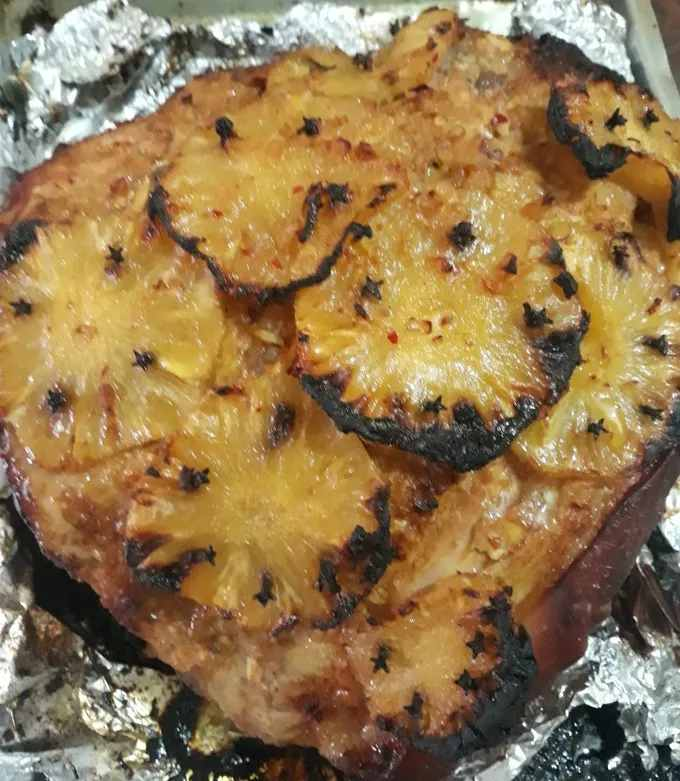

| Combate de Infecções | Devido à sua ação antimicrobiana, o cravinho pode ser usado no combate às infecções causadas por alguns tipos de bactérias |
|---|
| Melhoria de Digestão | Ele também melhora a digestão e ajuda no controle da diarreia, por ativar enzimas que auxiliam o estômago e intestino. |
|---|
RECEITAS COM CRAVO DA INDIA
Chá de Cravo da India
Ingredientes;
- 200 ml de água
- 4 cravos da india
- Gengibre fresco á gosto
- Açúcar
Como fazer;
Descasque e rale o gengibre, aqueça a água em
fogo médio até formar bolhas no fundo da panela, adicione o cravo e o gengibre,
e deixe cozinhar em fogo baixo por 5 minutos.

Pernil Assado Com Abacaxi E Cravo Da Índia
Ingredientes;
- 1 pernil de 4 quilos e meio
- 1 abacaxi pequeno
- 1 cabeça de alho
- 1 cebola grande
- 4 colheres de sopa páprica
- 1 colher de sopa gengibre em pó
- 3 limões grandes
- 1 laranja
- 1 sachê de chimichurri desidratado
- Curry
- Mostarda
- Sal
- Cravo da Índia a gosto
Como fazer;
Descasque toda a cabeça de alho amasse metade, pique a cebola, uma tigela coloque os temperos,
juntamente com o azeite e o vinagre, misture bem, junte o alho e a cebola.
Corte em dois os dentes de alho restante, escorra o suco dos limões, quando que estiver bem escorrida
faça furos por todo o pernil com a ponta de uma faca e coloque os pedaços de alho nesses furos,
passe o preparo de temperos por todo o pernil, regue com o suco da laranja e feche
bem o recipiente, leve para a geladeira e, vá virando a carne no bolw de vez em quando.
Essa carne ficará marinando no tempero por 3 dias.
Passados os 3 dias, descasque e corte o abacaxi em rodelas, retire o pernil da geladeira, acomode-o em um tabuleiro e despeje o tempero,
cubra com as rodelas do abacaxi espetadas com cravos, envolva a carne em papel alumínio. E leve ao forno preaquecido por 4 horas.
Após esse período retire o papel e, volte com o pernil para o forno por mais 2 horas,
regando a carne com o suco que se formou até secar. Quando a carne estiver bem macia, dourada e o suco tiver secado,
o pernil está pronto. Retire o pernil do forno e deixe descansar por
20 minutos.

Sagu de vinho com creme de coco vegano
Ingredientes;
- 1/2 xícara tapioca granulada (sagu de mandioca)
- 1 e 1/2 xícara de água para hidratar o sagu
- a gosto canela em casca ou em pau
- a gosto cravos-da-índia
- 1/2 xícara vinho tinto seco
- 1 xícara água para misturar no vinho
Como fazer;
Deixe a tapioca granulada de molho por 1 hora na água. Misture o vinho, o restante da água e o açúcar, misture bem.
Acrescente a tapioca granulada com toda a água e as especiarias. Misture bem e deixe o borbulhar.
Depois, misture, baixe o fogo e deixe cozinhar por 25 minutos,
sempre mexendo para não queimar o fundo da panela e os grânulos de tapioca.
Enquanto isso, vamos fazer o creme de coco. Comece misturando a água com o amido de milho até dissolver.
Já na panela pequena, coloque todos os ingredientes, inclusive o amido diluído na água.
Misture e ele ao fogo baixo, sempre misturando até engrossar e virar um creme.
Depois do sagu cozinhar, ficar molinho e o líquido reduzir, leve a um ponte e deixe
esfriar na geladeira.
Pedro Vinicius 2026 - Todos os direitos reservados
Trabalho acadêmico sem fins lucrativos
Deixe a tapioca granulada de molho por 1 hora na água. Misture o vinho, o restante da água e o açúcar, misture bem.
Acrescente a tapioca granulada com toda a água e as especiarias. Misture bem e deixe o borbulhar.
Depois, misture, baixe o fogo e deixe cozinhar por 25 minutos,
sempre mexendo para não queimar o fundo da panela e os grânulos de tapioca.
Enquanto isso, vamos fazer o creme de coco. Comece misturando a água com o amido de milho até dissolver.
Já na panela pequena, coloque todos os ingredientes, inclusive o amido diluído na água.
Misture e ele ao fogo baixo, sempre misturando até engrossar e virar um creme.
Depois do sagu cozinhar, ficar molinho e o líquido reduzir, leve a um ponte e deixe
esfriar na geladeira.